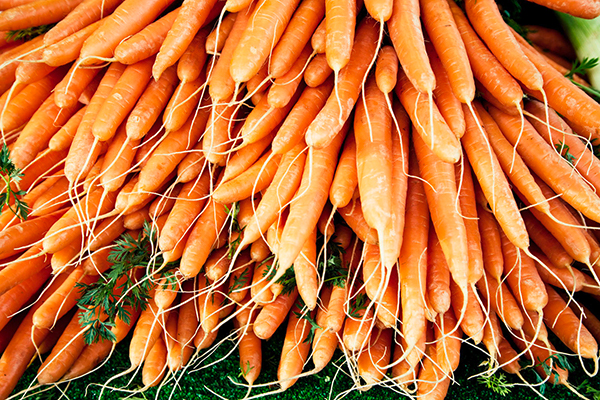
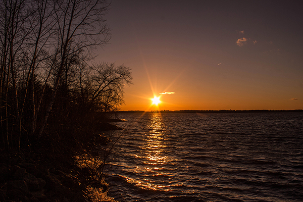
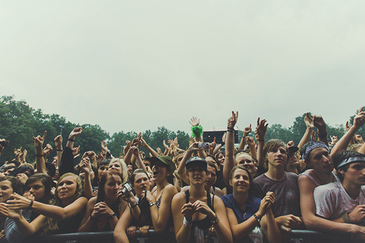
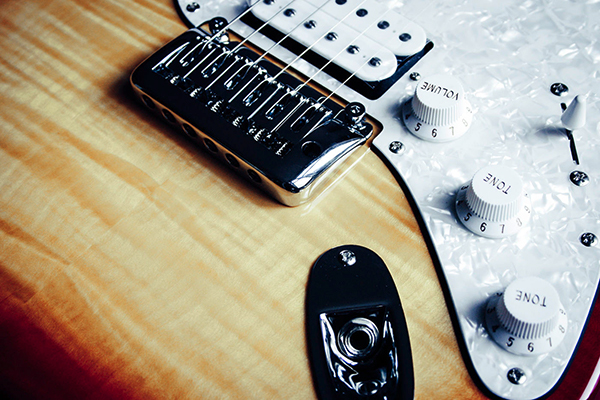
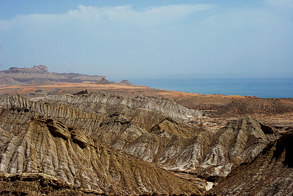
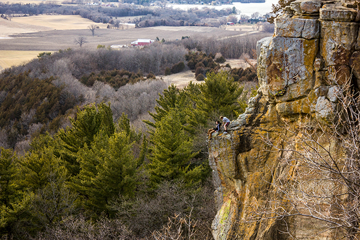
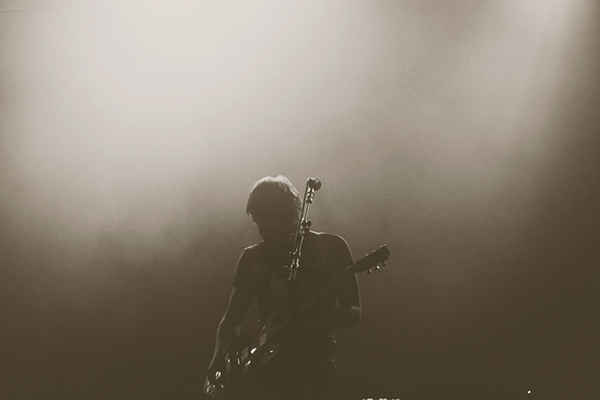

Jonathan Dure
Responsive Images

A photo by Markus Spiske

A photo by Yinan Chen

A photo by Markus Spiske

A photo by Markus Spiske

A photo by Fahim Akhter

A photo by Yiman Chen

A photo by Markus Spiske